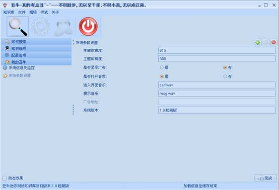
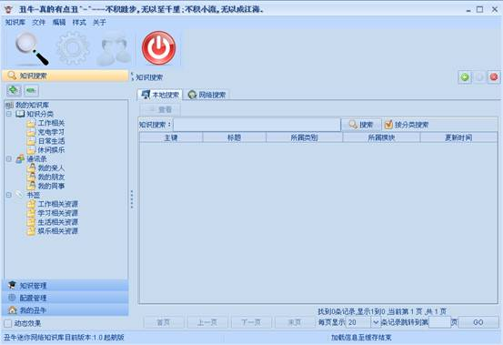
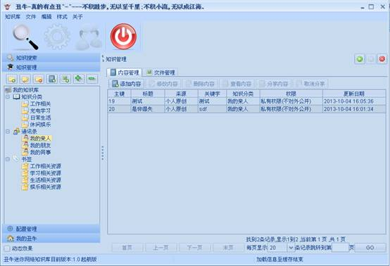
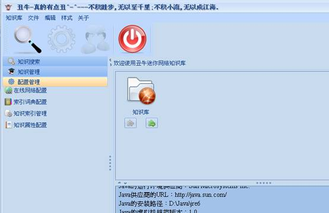
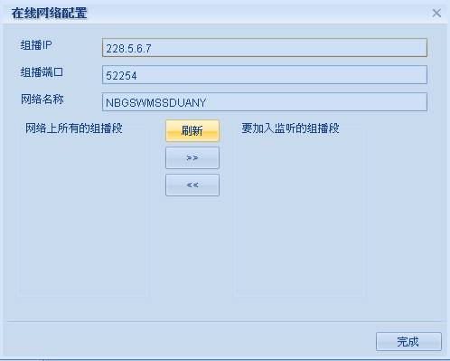
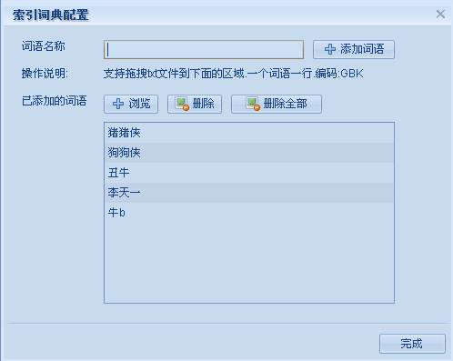
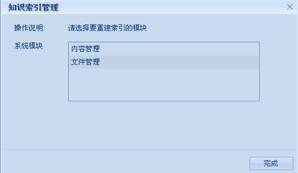
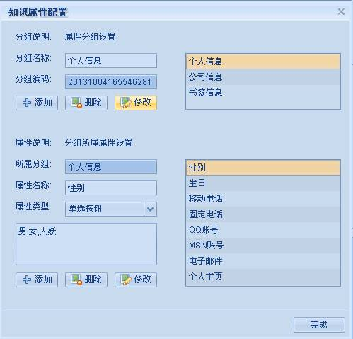
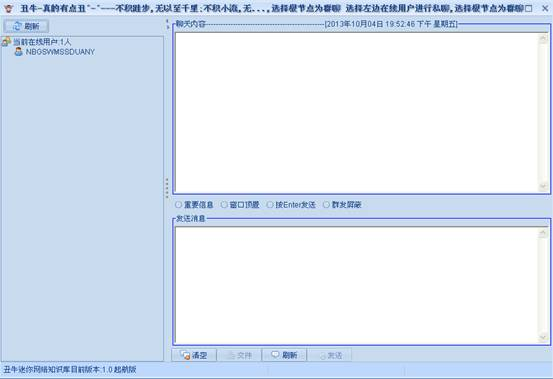

丑牛迷你知识库1.0总体概述
一：个人信息
作者：Javacoo
日期：2013-10-01
版本：1.0
QQ：164863067
QQ群：217690017
个人网站：www.meishih.com,www.javacoo.org
二：架构说明
系统是基于 Swing+Spring-3.1.1+Mybatis-3.1.1+C3p0-0.9.1.2+Lucene4.3.1+Sqlite等技术实现的。
采用插件式开发模式，各大功能模块均可独出来，功能与系统UI对立，可配置性较强。
三：功能概述
1：我的丑牛：系统参数设置及插件信息。

2：知识搜索：知识搜索分本地搜索和局域网搜索。
本地搜索：搜索已经加入知识库系统的知识点，支持全文搜索。
局域网搜索：只要本地局域网内有其他用户使用了本系统，且分享了自己的知识积累，就可以搜索，查看或者下载。

3：知识管理：对知识程统一管理
系统默认自带一些常用知识分类 ，用户也可以自己添知识分类。
分类设置中“所属属性分组”是在参数管理中设置的。
选中一个知识分类即可添加知识点，知识点按内容形式分文文本内容和文件2中形式，可分别添加。

4：配置管理：

在线网络配置：主要用于在局域网内分享自己的知识及在线聊天交流。

索引词典配置：添加知识点时，需要为知识点建立索引，系统默认是根据系统分词器自带的词典，有一定的局限性，所以这里可以添加自己的词典，建立索引时就会结合自定义的词典进行分词处理，使搜索准确率更高。

知识索引管理：对已经建立的知识索引进行重建，主要是在添加了新的词语到索引词典里面时使用。

知识属性配置：主要用于用户自定义知识属性，系统默认只有少数必填的属性字段，用户可以按照需要自己扩展属性。

4：局域网聊天室：一个简单的局域网聊天室，实现了文件传输，私聊，群聊。
